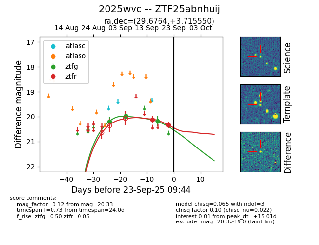
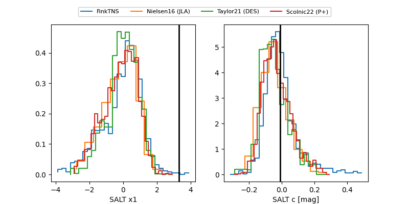

FINK: ZTF25abnhuij
Lasair: ZTF25abnhuij
ALeRCE: ZTF25abnhuij
TNS: 2025wvc
YSE: 2025wvc
ZTF25abnhuij (ztf,fink)
2025wvc (tns,yse)
equatorial (ra, dec) = (29.6764,+3.71555)
galactic (l, b) = (153.2735,-55.14359)


last ztfg=20.19, ztfr=20.33
3 ztfg, 2 ztfr detections